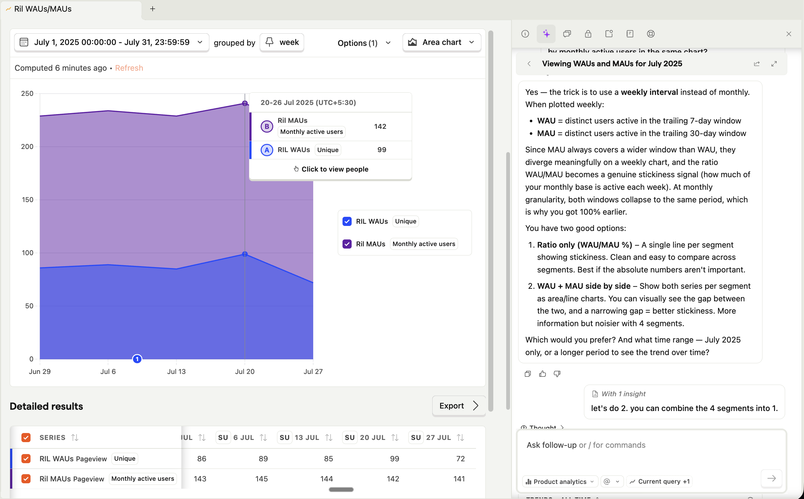

10+ years across software, design, data, and product. Most recently founding PM building an AI recruiter at Expertia AI (pre-Series A), with the likes of Reliance group as customers.
Formerly, Senior PM leading the learning outcomes product for enterprise programs at upGrad's Harappa Education, self-taught software dev at Auroville, and designer at Mu-Sigma.
- AI calling demo - call-based AI agent for candidate screening
- Spent 5 transformative years in Auroville after BITS.
- sid's pod craft - Mar 2023 AI episode when LLMs were just starting to have a moment
- Scaled from 2M to 30M candidates in ~2 years at Expertia.
-
Led enterprise implementation for 500+ recruiters at Reliance with a successful renewal. Also,
highly sticky.

View zoomed-in visual - Shipped AI features across voice calling, resume screening, agentic chat with candidate profile, and interview assistance.
- Built growth and GTM systems from scratch: analytics, activation, CRM, and ads (100K+ USD topline contribution).
- Agent for keeping alignment with long-term goals: pro-active weekly coach built on daily logs, weekly goals, and annual goals to surface any interesting patterns and set intent for the next week in alignment with the long-term goals.
- Prototyping with Lovable building quick prototypes to convey ideas and also to test how far the tools can go (this is another wip proactive growth-oriented coach for voice-based conversations).
- For complex topics, I start with LLM conversations with claude to think through hairy problems and edge cases, then use NotebookLM audio overviews during walks to develop a deeper understanding, this one is to double-click on the architecture of a dynamically-adaptive app calibrated to the learner leveraging knowledge graphs to help get better grades in Cambrdige IGCSE and A levels.
- Automation to add tasks from granola notes from any meeting directly to Linear via MCP and automations using Codex.
- Exploring the implementation of LLM wiki from Karpathy for capturing insights from AI conversations (referrable in the future by AI) in a personal Obsidian because they get lost otherwise.
- Playing around with openclaw exploring new use-cases.


High-quality peers, small high-speed teams (seed to Series B), writing culture, and environments that benefit from AI tailwinds. I am especially interested in AI-first products, voice as interaction, wellness, and AI-hardware. I lean consumer, but enjoy business products too.
- d3-based visualisation of the population diversity growth of Auroville inspired from the popular Hans Rosling's health and wealth of nations infographic
- Data art: d3 based meditative visuals
- Lip-synced video transalation PoC for learning programs
- Part of Swadharma team: a self-discovery program for young adults in Auroville
- sid's pod craft: long-form conversations with people from diverse crafts
Endurance athlete. Learning Hindustani vocals. silent-mind.com - explorations in calmer, more mindful experiences.